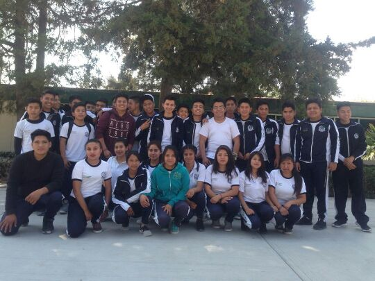

¿Qué competencias voy a desarrollar en esta carrera?
- Podrás elaborar documentos electrónicos, instalar, ensamblar y operar hardware y software, diseños de páginas Web con animaciones interactivas y administración de sistemas de información básicos, entre otras.
- Serás capaz de instalar configurar sistemas operativos
- Podrás gestionar información utilzando procesadore de texto, hojas de cálculo y software
- Tendrás los conocimientos necesarios y las habilidades para configurar conexiones de red
- Podrás diseñar bases de datos, instalar software de bases de datos
- Serás capaz de instalar equipos de cómputo y configurarlos
Al concluir tu carrera podras desempeñarte en los siguientes ámbitos
- En empresas públicas y privadas o de manera independiente en el área de sistemas o diseñando páginas web
- En laboratorios de cómputo
- Como programadores de bases de datos, de dispositivos móviles o como administrador de información de redes locales y/o remotas

Técnico en Ofimática
El bachillerato tecnológico te ofrece, la opción de estudiar el bachillerato, además de cursar una carrera técnica, te prepara para que coninúes tus estudios de nivel superior (lincenicatura o ingeniería), o bien, puedas incorporarte al mercado laboral o autemplearte.
¿En cuanto tiempo terminaré el bachillerato tecnológico?
La duración del bachillerato es de seis semestres, mismos que cursarás en tres años
¿Cuál es el propósito de la carrera Técnico Ofimática?
Formar técnicos eficaces y eficientes para obtener y gestionar información de manera digital, utilizando recursos informáticos
¿En qué momento inicia mi formación en la carrera técnica?
La formación profesional inica en el segundo semestre y culmina en el sexto semestre

¿Que gustos e intereses son recomendables para cursar esta carrera?
- Habilidades de organización y planeación
- Interés en el área económico-administrativa
- Interés en el uso de las Tecnologías de la Información
- Habilidades básicas en el uso de equipo de cómputo y paqueteria
- Disposición para trabajar en equipo
- Habilidades comunicativas
- Sentido de Responsabilidad